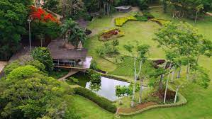
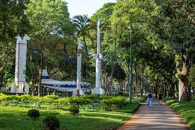

Sao Jose dos Campos
History of Sao Jose dos Campos
São José dos Campos was elevated to the status of village in 1767. During the 19th century, agriculture developed in the municipality, with emphasis on coffee, mainly from the 1880s onwards. strength, this being the moment that the city discovers its vocation for the area of technology. The municipality is the headquarters of important companies, such as: Panasonic, Johnson & Johnson, Ericsson, Philips, Ball Corporation, General Motors (GM), Petrobras, Monsanto, Embraer (headquarters), among others. It also has relevant teaching and research centers, such as: DCTA, INPE, Cemaden, IEAv, IAE, IFI, UNESP, ITA, FATEC, UNIVAP, Anhanguera, IP&D and UNIFESP , being an important technopole of military and metallurgical material and headquarters of the largest aerospace complex in Latin America. The Technological Park of São José dos Campos, the largest of its kind in the country, houses research units for large companies, being the only city in the world with research centers for the three largest aircraft manufacturers in the world, Embraer, Boeing and Airbus.
Population
The population of Sao Jose dos Campos is 697.428 based in the last Official colletion of information recorded in 2020
Location of Sao Jose dos Campos
São José dos Campos is a Brazilian municipality in the interior of the state of São Paulo. It is located in the Vale do Paraíba Paulista, east of the state capital. It is the seat of the Metropolitan Region of Vale do Paraíba and the North Coast and occupies an area of 1,099.409km², of which 353.9 km² are in the urban perimeter.
Parks of Sao Jose dos Campos
Living near a good park in São José dos Campos is an excellent way to enjoy the best the region has to offer in terms of quality of life.
City Park
With 1 million square meters, Roberto Burle Marx Park occupies an area that was part of the former Fazenda da Tecelagem Parahyba, owned by businessman Olivo Gomes. It is the park in São José dos Campos with the largest green area among all in the municipality. Better known as Parque da Cidade, the space is listed by the Municipal Council for the Preservation of Historic, Artistic, Landscape and Cultural Heritage (Comphac) and became a municipal park in 1996. One of its attractions is the Residence of Olivo Gomes. Built between 1949 and 1951, the house had its design signed by the architects Rino Levi and Roberto Cerqueira César and the landscaping was done by Roberto Burle Marx. One of the main buildings of modern architecture in Brazil, it was listed by the Council for the Defense of Historical, Archaeological, Artistic and Tourist Heritage (Condephaat) in 2013.
Santos Dumont Park
Since the 1950s, São José dos Campos has had aviation in its daily life, due to the presence of important institutes and research centers. In addition, it is the headquarters of Embraer and accounts for 95% of the aerospace and defense industry production chain in Brazil. Not by chance, the city is considered the Capital of the Airplane.